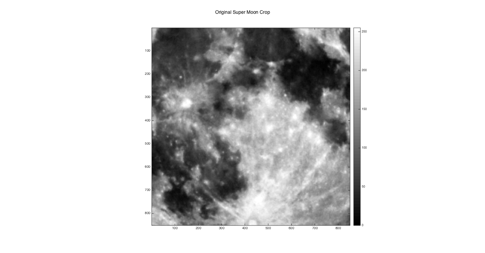
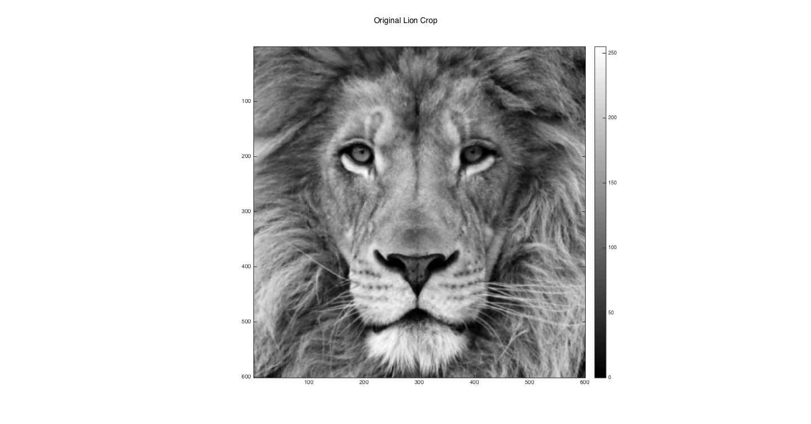
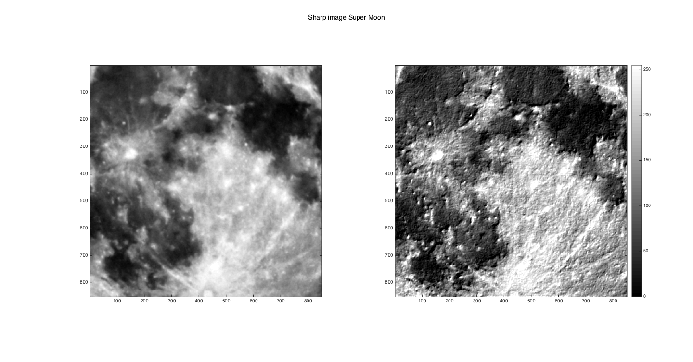
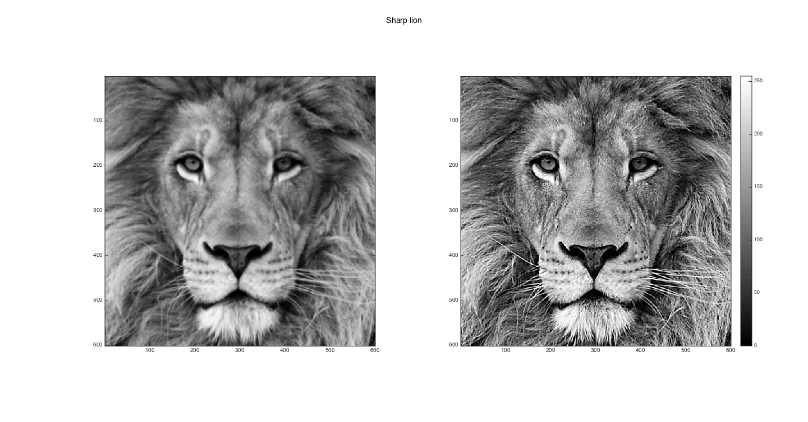

Contents
Image Sharpening
addpath('../../common/');
Input Images and parameter
moon_gaussina_dimension = [10, 10]; moon_scalar = 20; lion_gaussian_dimension = [15, 15]; lion_scalar = 25;
Super Moon
load '../data/superMoonCrop.mat';
superMoonCrop = myLinearContrastStretching(imageOrig);
[srows, scols] = size(superMoonCrop);
Lion Crop
load '../data/lionCrop.mat';
lionCrop = myLinearContrastStretching(imageOrig);
[lrows, lcols] = size(lionCrop);
Original Super Moon Crop
disp(['Original Super Moon Crop']); images = zeros(srows, scols, 1); images(:, :, 1) = superMoonCrop; myShowImages(images, 'Original Super Moon Crop');
Original Super Moon Crop
Original Lion Crop
disp(['Original Lion Crop']); images = zeros(lrows, lcols, 1); images(:, :, 1) = lionCrop; myShowImages(images, 'Original Lion Crop');
Original Lion Crop
Sharpened Super Moon
sharped_superMoonCrop = myUnsharpMasking(superMoonCrop,... moon_gaussina_dimension, moon_scalar); images = zeros(srows, scols, 2); images(:, :, 1) = superMoonCrop; images(:, :, 2) = sharped_superMoonCrop; myShowImages(images, 'Sharp image Super Moon');
Sharpened Lion
sharped_lionCrop = myUnsharpMasking(lionCrop,... lion_gaussian_dimension, lion_scalar); images = zeros(lrows, lcols, 2); images(:, :, 1) = lionCrop; images(:, :, 2) = sharped_lionCrop; myShowImages(images, 'Sharp lion');
Best Parameters
disp(['Gaussian Dimensions for Super Moon = [', num2str(moon_gaussina_dimension(1,1)), ... num2str(moon_gaussina_dimension(1,2)), ']']);
Gaussian Dimensions for Super Moon = [1010]
Tested on
- Gaussian Dimensions: [5,5], [10, 10], [15, 15], [20, 20] for both images
- Scaling: 5, 10, 15, 20, 25, 50, 100 for both images